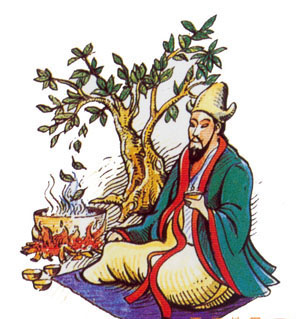

The Gaiwan, a brewing invention dating back to the Ming Dynasty, is a basic lidded cup, typically made from porcelain.
Glass pots are a contemporary brewing container, that allow the viewer to appreciate the way in which tea leaves release their natural beauty into the water.
A very popular one, this teapot cover, the functionality of a teapot, filter and serving pitch all in one unit. It usually, comes with a filter that can be used to strain the tea after infusion at the click of a lever.
Serious Gong-Fu Cha enthusiasts spend many hours debating the virtues of their teapots
In the traditional method of Chinese tea-making, called Gong-Fu Cha (Tea With Great Skill), the teapot is perhaps the most important element of this process.
Different styles of tea pots are used in different regions of China.
For example, large teapots are popular in northern China while tiny teapots are popular in the south.
Although tea originates in China, the style of many pots that are commonly used today is actually European.
Earlier on, teapots were generally quite large, but they gradually became smaller as people realized that a smaller size provided the advantage of retaining the aroma of tea and preventing it from turning bitter due to over-steeping. Steeping the tea in a smaller pot would not dissipate the fragrance nor impede the release of the flavor.
The rolled leaves – which resemble little snails – have a strong grassy smell, and a rather light, refreshing flavour.
Small, sun-withered leaves give forth a delicate, floral and fragrant flavour.
Variations in roasting levels and harvest times give different flavours. Spring yields are highly sought after for their deep fruity taste and sweet finish.
Coarse leaves are smoked to create a deep, smooth and smoky flavour.
The original idea of the invention of tea credited to the legendary Emperor Shennong, who is said to have lived 5 000 years ago. His far-sighted edicts required, among other things, that all drinking water be boiled as a hygienic precaution.
A story goes that, one summer day, while visiting a distant part of his realm, he and the court stopped to rest. In accordance with his ruling, the servants began to boil water for the court to drink. Dried leaves from a nearby bush fell into the boiling water, and a brown substance was infused into the water. As a scientist, the Emperor was interested in the new liquid, drank some, and found it very refreshing. And so, according to legend, tea was created in 2737 BC.

When speaking of ancient China and inventions, teaware would certainly be near the top of the list. Teaware, like tea drinking customs, was developed out of the needs, tastes, and trends of people at different times.
Traditionally, tea drinkers were regarded as the 'academic' and 'cultural elites' of the society. The practice of drinking tea was considered to be an expression of personal morality, education, social principles, and status. Increased enthusiasm for tea drinking led to the greater production of teaware, which significantly popularized Chinese porcelain culture.
Valuable metals were employed in the making of teapots, but people soon discovered that those made of ceramic were ideal for tea preparation. The obvious distinctions in the raw materials used in the making of porcelain and purple clay teaware would bring out different sensations of enjoyment in brewing and savoring tea.
One of the most influential factors that contributed to the establishment of Chinese tea culture was the famous treatise The Classic of Tea, composed by Lu Yu (active c. 760-800) in the mid-8th century, during the period of Tang Dynasty.
Enjoy your Tea!
Scroll down for some nutritional information about the tea you just had.
Green tea has been shown to improve blood flow and lower cholesterol. A 2013 review of many studies found green tea helped prevent a range of heart-related issues, from high blood pressure to congestive heart failure. What’s good for the heart is usually good for the brain; your brain needs healthy blood vessels, too. In one Swiss study, MRIs revealed that people who drank green tea had greater activity in the working-memory area of their brains. Green tea has also been shown to help block the formation of plaques that are linked to Alzheimer's disease. Green tea seems to help keep blood sugar stable in people with diabetes.
Health benefits of oolong tea include its ability to reduce chronic health conditions such as heart diseases, inflammatory disorders, and high cholesterol levels while providing vital antioxidants and promoting superior bone structure, robust skin, and good dental health. Oolong tea is fragrant with a pleasant aroma and has a fruity flavor. Despite its caffeine content, it is still a relaxing drink. The health benefits of oolong tea are doubled because of the combined qualities of black tea and green tea. According to the Tea Association of the United States, this tea falls somewhere between green and black teas, as its leaves are partially oxidized. There are numerous kinds of tea in this world, but oolong tea is one of the most beneficial.
Health benefits of white tea include a reduced risk of cancer, cardiovascular disorders, and an improvement in oral health. It has antioxidant and anti-aging properties which help in maintaining good health and wrinkle-free skin. It protects the skin from harmful effects of UV rays. With its antibacterial properties, white tea also protects the body from various infection-causing bacteria. It provides relief to diabetics from symptoms such as decreased plasma glucose levels, increased insulin secretion, and excessive thirst (polydipsia). Intake of white tea also helps in losing weight.
The health benefits of black tea include its beneficial impacts on high cholesterol, diarrhea, tooth decay, low-concentration levels, and digestive problems. It is also good for improving blood circulation and treating high blood pressure and asthma. It is one of the most popular teas known to man and is well-known for its medicinal qualities.
For another cup of tea click here.